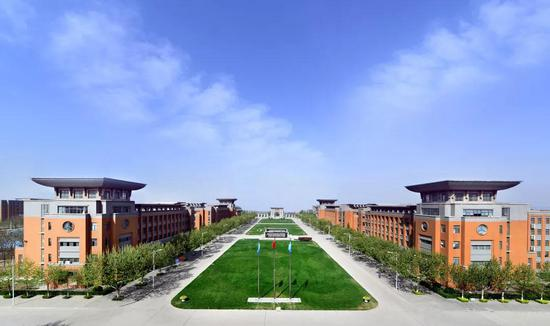
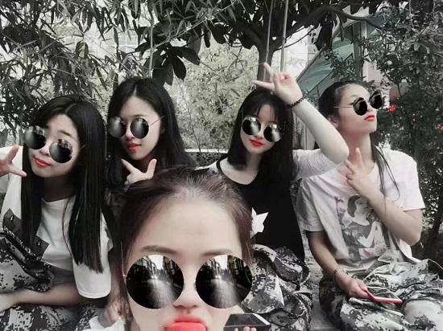

让我们一起交流吧~
我非常热爱我的学习和我的大学生活
郑州商学院是由巩义籍台湾著名教育家王广亚博士为回馈桑梓、贡献家乡教育事业， 于2004年捐资创建的一所全日制普通本科高校。学校前身是与河南财经政法大学合作建设的独立学院——河南财经政法大学成功学院； 2012年3月，转设为独立设置的普通本科高校——郑州成功财经学院；2018年11月，更名为郑州商学院。学校位于物华天宝、人文荟萃的河南省巩义市。 近年来，学校坚持走内涵发展之路，力争早日将学校建成省内一流、国内知名、商科特色鲜明的应用型本科高校。
2019-09-05
我和我的室友在军训时拍下的这张照片
我们从不同的地方相聚在416宿舍，我们有着不同的口音，不同的吃住习惯， 不同的人生观。而正是因为这些，才让我们的大学生活相处中出现各种的笑点，和各种泪点。 照片从左到右，第一个人睡在5号床，是个特别爱干净，爱打理的人。 第二个人是我，哈哈，睡在4号床，和第一个人不同，我不爱打理，柜子里总是乱糟糟的，然后和她们说，这是有灵魂的柜子。哈哈。 第三个人睡1号床，是个交际能力特别强的人，说话嗓门大，知道的八卦也多。 第四个人睡2号床，哈哈，感觉她整天就是傻乎乎的，很善良，很容易相处。 给我们拍照的人睡3号床，她很独立，知道的东西也多，平时有事都会问问她，有她在，仿佛事情总是会变的很简单。
2019-09-05
zhuxr©2019-2050